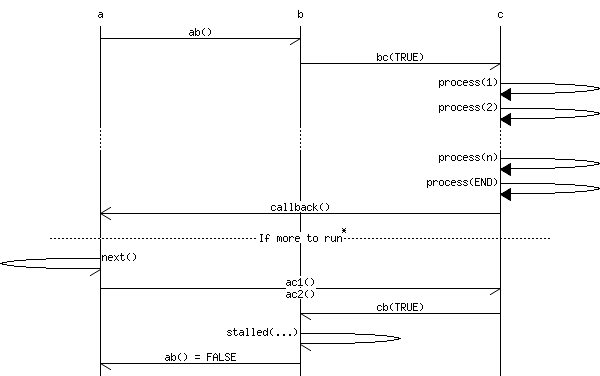

Random tech links
This is an archived post
Previous
Index
Next
Sequence diagram tools
July 18 2012, 8:32 AM
by Alexey Shamrin
Few
sequence diagram
tools from
HN thread
.
Web-based
WebSequence
:
Open source
Mscgen
:

Tags
design
47 views and 0 responses